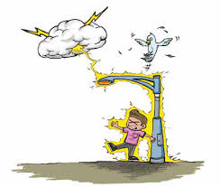

낙뢰

낙뢰란?
낙뢰란 번개, 즉 불꽃이 하강되어 지표면의 어느 지점에 흘러드는 현상
1.낙뢰 예보시
1.
2.전기제품의 플러그를 빼고,
3.등산용 스틱이나 우산 같이
4. 평지에서는
5.골프, 낚시 등 야외활동 중일 때
외출을 삼가고
외부에 있을 땐 자동차 안, 건물 안, 지하 등안전한 곳으로 대피
합니다.2.전기제품의 플러그를 빼고,
1m이상 거리를 유지
합니다.3.등산용 스틱이나 우산 같이
긴 물건은 몸에서 멀리
합니다.4. 평지에서는
몸을 낮게
하고 물기가 없는움푹 파인 곳으로 대피
합니다.5.골프, 낚시 등 야외활동 중일 때
장비를 몸에서 떨어뜨리고
,안전한 곳으로 대피
합니다.
2.낙뢰 발생시
1. 스마트폰, 라디오 등을 통하여
2. 창문을 닫고, 감전 우려가 있으므로
3.높은 곳은 위험하므로 정상부에서는 낙뢰 발생 시
4.정상부 암벽 위나 키 큰 나무 밑은 위험하므로
기상정보를 파악
하고 될 수 있으면 외출을 자제합니다.2. 창문을 닫고, 감전 우려가 있으므로
샤워나 설거지 등을 하지 않습니다.
3.높은 곳은 위험하므로 정상부에서는 낙뢰 발생 시
신속히 낮은 지대
로 이동합니다.4.정상부 암벽 위나 키 큰 나무 밑은 위험하므로
즉시 안전한 장소로 이동
한다.
3. 낙뢰 응급처치
1.낙뢰로부터 안전한 장소로 주변인들과 함께
2.신경계 피해, 골절, 청각과 시각의
피해자를 옮기고 의식 여부
를 살핍니다2.신경계 피해, 골절, 청각과 시각의
손상을 체크
합니다.